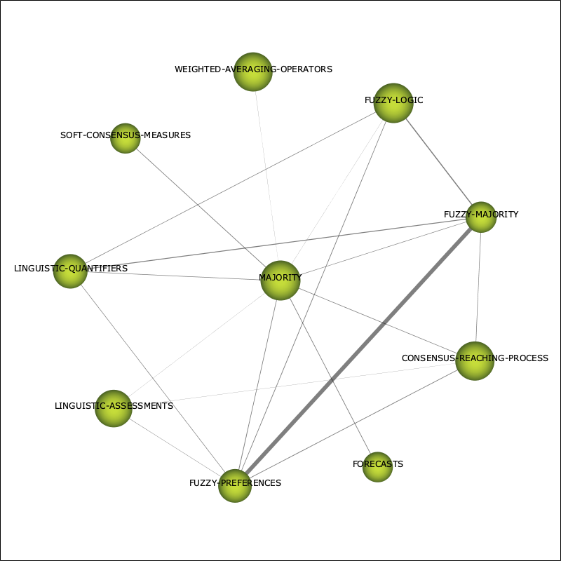
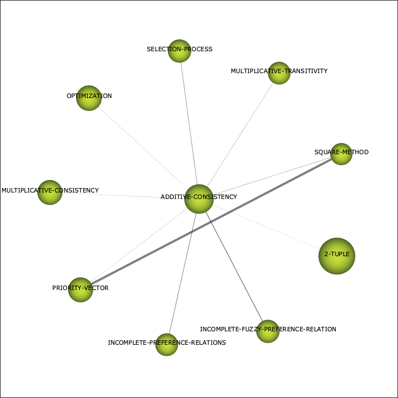
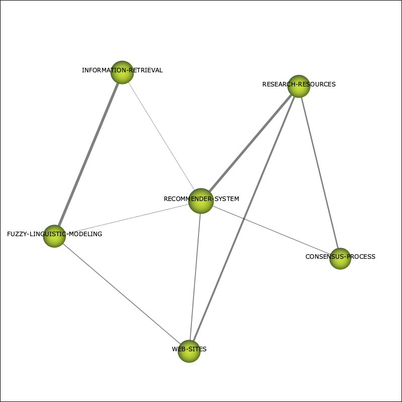
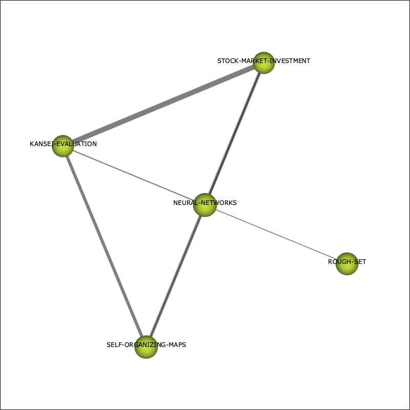
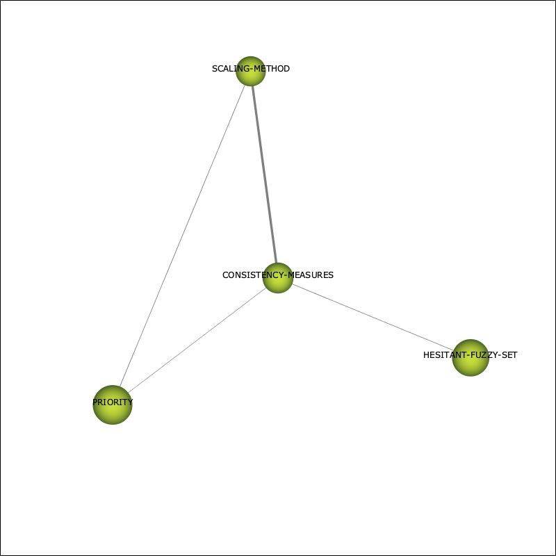
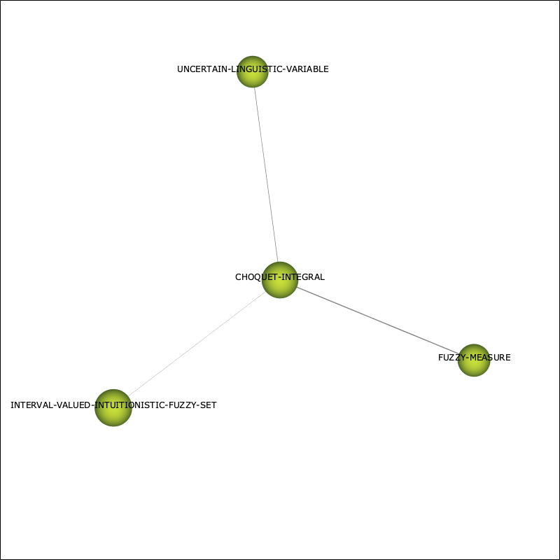

| Performance measure | Strategic diagram |
| unionDocuments-documentsCount | |
| unionDocuments-hIndex | |
| unionDocuments-sumCitations |
| Name | Centrality | Centrality range | Density | Density range |
| CONSISTENCY | 79.08 | 1 | 10.51 | 0.44 |
| OWA-OPERATORS | 51.93 | 0.94 | 22.47 | 0.83 |
| TOPSIS | 43.59 | 0.89 | 7.04 | 0.28 |
| VAGUE-SET-THEORY | 29.45 | 0.67 | 9.84 | 0.33 |
| ANALYTIC-NETWORK-PROCESS | 19.1 | 0.56 | 14.6 | 0.61 |
| DECISION-MAKING | 17.72 | 0.5 | 1.61 | 0.06 |
| LINGUISTIC-VARIABLES | 31.39 | 0.78 | 4.17 | 0.17 |
| FUZZY-SETS | 40.84 | 0.83 | 1.98 | 0.11 |
| MAJORITY | 29.86 | 0.72 | 18.54 | 0.67 |
| ADDITIVE-CONSISTENCY | 23.13 | 0.61 | 9.85 | 0.39 |
| GROUP-MEMBERS | 8.97 | 0.44 | 111.21 | 1 |
| RECOMMENDER-SYSTEM | 8.49 | 0.39 | 38 | 0.89 |
| NEURAL-NETWORKS | 0.11 | 0.11 | 58.89 | 0.94 |
| CONSISTENCY-MEASURES | 5.19 | 0.28 | 14.31 | 0.56 |
| CHOQUET-INTEGRAL | 6.04 | 0.33 | 5.98 | 0.22 |
| MULTIDIMENSIONAL-ANALYSIS | 1.11 | 0.22 | 19.44 | 0.72 |
| FUZZY-GAME-THEORY | 0 | 0.06 | 22.22 | 0.78 |
| PERSONALITY | 0.36 | 0.17 | 12.5 | 0.5 |
| Name | unionDocumentsdocumentsCount | unionDocumentshIndex | unionDocumentssumCitations |
| CONSISTENCY | 376 | 70 | 15,073 |
| OWA-OPERATORS | 168 | 47 | 6,936 |
| TOPSIS | 188 | 50 | 8,671 |
| VAGUE-SET-THEORY | 157 | 49 | 7,584 |
| ANALYTIC-NETWORK-PROCESS | 76 | 32 | 3,980 |
| DECISION-MAKING | 81 | 30 | 2,841 |
| LINGUISTIC-VARIABLES | 100 | 36 | 4,755 |
| FUZZY-SETS | 173 | 49 | 7,027 |
| MAJORITY | 65 | 27 | 2,531 |
| ADDITIVE-CONSISTENCY | 74 | 30 | 2,519 |
| GROUP-MEMBERS | 17 | 15 | 1,463 |
| RECOMMENDER-SYSTEM | 17 | 10 | 902 |
| NEURAL-NETWORKS | 11 | 7 | 390 |
| CONSISTENCY-MEASURES | 28 | 19 | 1,486 |
| CHOQUET-INTEGRAL | 27 | 15 | 1,136 |
| MULTIDIMENSIONAL-ANALYSIS | 7 | 4 | 191 |
| FUZZY-GAME-THEORY | 8 | 8 | 223 |
| PERSONALITY | 12 | 5 | 138 |
| Name | Cluster's network |
| CONSISTENCY | |
| OWA-OPERATORS | |
| TOPSIS | |
| VAGUE-SET-THEORY | |
| ANALYTIC-NETWORK-PROCESS | |
| DECISION-MAKING | |
| LINGUISTIC-VARIABLES | |
| FUZZY-SETS | |
| MAJORITY |  |
| ADDITIVE-CONSISTENCY |  |
| GROUP-MEMBERS | |
| RECOMMENDER-SYSTEM |  |
| NEURAL-NETWORKS |  |
| CONSISTENCY-MEASURES |  |
| CHOQUET-INTEGRAL |  |
| MULTIDIMENSIONAL-ANALYSIS | |
| FUZZY-GAME-THEORY | |
| PERSONALITY | |